#upload beer and breweries data
beers = read.csv("/Users/jacobgipson/Documents/SMU/Doing Data science/Beers Project/Beers.csv", header = TRUE, na.strings = c(""," ","NA"))
breweries = read.csv("/Users/jacobgipson/Documents/SMU/Doing Data science/Beers Project/Breweries.csv", header = TRUE, na.strings = c(""," ","NA"))library(ggplot2)## Warning: package 'ggplot2' was built under R version 4.0.2library(ggthemes)## Warning: package 'ggthemes' was built under R version 4.0.2library(dplyr)## Warning: package 'dplyr' was built under R version 4.0.2##
## Attaching package: 'dplyr'## The following objects are masked from 'package:stats':
##
## filter, lag## The following objects are masked from 'package:base':
##
## intersect, setdiff, setequal, unionlibrary(RColorBrewer)
####This creates a custom color palette
# Classic palette BuPu, with 4 colors
coul <- brewer.pal(4, "PuOr")
# Add more colors to this palette :
coul <- colorRampPalette(coul)(51)
##Make Brewery count graph
brewerycount = data.frame(table(breweries['State']))
colnames(brewerycount) = c('State', 'BrewCount')
brewerycount## State BrewCount
## 1 AK 7
## 2 AL 3
## 3 AR 2
## 4 AZ 11
## 5 CA 39
## 6 CO 47
## 7 CT 8
## 8 DC 1
## 9 DE 2
## 10 FL 15
## 11 GA 7
## 12 HI 4
## 13 IA 5
## 14 ID 5
## 15 IL 18
## 16 IN 22
## 17 KS 3
## 18 KY 4
## 19 LA 5
## 20 MA 23
## 21 MD 7
## 22 ME 9
## 23 MI 32
## 24 MN 12
## 25 MO 9
## 26 MS 2
## 27 MT 9
## 28 NC 19
## 29 ND 1
## 30 NE 5
## 31 NH 3
## 32 NJ 3
## 33 NM 4
## 34 NV 2
## 35 NY 16
## 36 OH 15
## 37 OK 6
## 38 OR 29
## 39 PA 25
## 40 RI 5
## 41 SC 4
## 42 SD 1
## 43 TN 3
## 44 TX 28
## 45 UT 4
## 46 VA 16
## 47 VT 10
## 48 WA 23
## 49 WI 20
## 50 WV 1
## 51 WY 4brewerycount %>%
ggplot(aes(x = reorder(State, BrewCount), y = BrewCount, fill = State)) +
theme_classic() +
geom_bar(stat = "identity",fill=coul)+
coord_flip() +
theme(legend.position = "none") +
ylab("Number of Breweries") +
xlab("State") +
ggtitle("Number of Breweries in Each State") 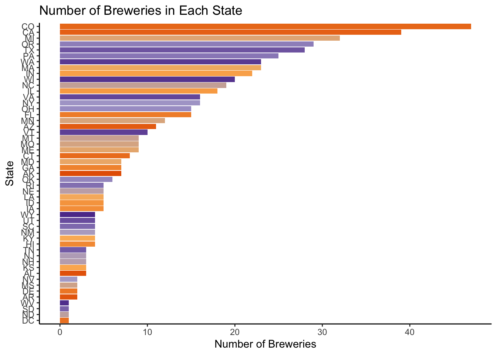
colnames(breweries)[1] = "Brewery_id"
colnames(breweries)[2] = "Brewery Name"
fullbeer <- left_join(beers, breweries, by = "Brewery_id")
head(fullbeer, n = 6)## Name Beer_ID ABV IBU Brewery_id
## 1 Pub Beer 1436 0.050 NA 409
## 2 Devil's Cup 2265 0.066 NA 178
## 3 Rise of the Phoenix 2264 0.071 NA 178
## 4 Sinister 2263 0.090 NA 178
## 5 Sex and Candy 2262 0.075 NA 178
## 6 Black Exodus 2261 0.077 NA 178
## Style Ounces Brewery Name City State
## 1 American Pale Lager 12 10 Barrel Brewing Company Bend OR
## 2 American Pale Ale (APA) 12 18th Street Brewery Gary IN
## 3 American IPA 12 18th Street Brewery Gary IN
## 4 American Double / Imperial IPA 12 18th Street Brewery Gary IN
## 5 American IPA 12 18th Street Brewery Gary IN
## 6 Oatmeal Stout 12 18th Street Brewery Gary INtail(fullbeer, n = 6)## Name Beer_ID ABV IBU Brewery_id
## 2405 Rocky Mountain Oyster Stout 1035 0.075 NA 425
## 2406 Belgorado 928 0.067 45 425
## 2407 Rail Yard Ale 807 0.052 NA 425
## 2408 B3K Black Lager 620 0.055 NA 425
## 2409 Silverback Pale Ale 145 0.055 40 425
## 2410 Rail Yard Ale (2009) 84 0.052 NA 425
## Style Ounces Brewery Name City State
## 2405 American Stout 12 Wynkoop Brewing Company Denver CO
## 2406 Belgian IPA 12 Wynkoop Brewing Company Denver CO
## 2407 American Amber / Red Ale 12 Wynkoop Brewing Company Denver CO
## 2408 Schwarzbier 12 Wynkoop Brewing Company Denver CO
## 2409 American Pale Ale (APA) 12 Wynkoop Brewing Company Denver CO
## 2410 American Amber / Red Ale 12 Wynkoop Brewing Company Denver COlibrary(tidyverse)## ── Attaching packages ───────────────── tidyverse 1.3.0 ──## ✓ tibble 3.1.5 ✓ purrr 0.3.4
## ✓ tidyr 1.1.0 ✓ stringr 1.4.0
## ✓ readr 1.3.1 ✓ forcats 0.5.0## Warning: package 'tibble' was built under R version 4.0.2## Warning: package 'stringr' was built under R version 4.0.2## ── Conflicts ──────────────────── tidyverse_conflicts() ──
## x dplyr::filter() masks stats::filter()
## x dplyr::lag() masks stats::lag()#Number of missing ABV values
sum(is.na(fullbeer$ABV))## [1] 62#Number of missing IBU values
sum(is.na(fullbeer$IBU))## [1] 1005#Number of missing styles
sum(is.na(fullbeer$Style))## [1] 5fullbeer$Style = as.factor(fullbeer$Style)
styles_list<-unique(fullbeer$Style)
#Fill in missing IBU Values with mean IBU value of the style of beer
for(sty in 1:length(styles_list)){
l<-fullbeer[fullbeer$Style==styles_list[sty],]
m<-l[!(is.na(l$IBU)),]
n<-mean(m$IBU)
fullbeer$IBU[fullbeer$Style==styles_list[sty] & is.na(fullbeer$IBU)]<-n
}
#Fill in missing ABV Values with mean ABV value of the style of beer
for(sty in 1:length(styles_list)){
l<-fullbeer[fullbeer$Style==styles_list[sty],]
m<-l[!(is.na(l$ABV)),]
n<-mean(m$ABV)
fullbeer$ABV[fullbeer$Style==styles_list[sty] & is.na(fullbeer$ABV)]<-n
}
#No more missing ABV values
sum(is.na(fullbeer$ABV))## [1] 3#We still have 52 missing IBU values
sum(is.na(fullbeer$IBU))## [1] 55#We assume all mead and ciders should have an IBU of 0 as they generally do not come with an IBU value.
#The rest of the styles were looked up.
fullbeer$IBU[fullbeer$Style == "Cider"] = 0
fullbeer$IBU[fullbeer$Style == "Mead"] = 0
fullbeer$IBU[fullbeer$Style == "Rauchbier"] = 0
fullbeer$IBU[fullbeer$Style == "Shandy"] = 0
fullbeer$IBU[fullbeer$Style == "American Malt Liquor"] = 0
fullbeer$IBU[fullbeer$Style == "Kristalweizen"] = 40
fullbeer$IBU[fullbeer$Style == "Flanders Red Ale"] = 59
fullbeer$IBU[fullbeer$Style == "Braggot"] = 12
fullbeer$IBU[fullbeer$Style == "Low Alcohol Beer"] = 0
#No more missing IBU values
sum(is.na(fullbeer$IBU))## [1] 3# 5 rows are missing styles. 2527 and 1635 are actual beers. The other 3 are not specific beers so they were removed
fullbeer$Style = as.character(fullbeer$Style)
#OktoberFiesta
fullbeer$Style[fullbeer$Beer_ID == 2527] = "Märzen / Oktoberfest"
#Kilt Lifter
fullbeer$Style[fullbeer$Beer_ID == 1635] = "Scottish Ale"
#removed Special Release (new special release every month),The CROWLER (this is the can not the beer),
#CAN'D AID Foundation, (this is an event not one specific beer)
fullbeer<-fullbeer[!(fullbeer$Beer_ID == 2210 | fullbeer$Beer_ID==1796|fullbeer$Beer_ID==1790),]
fullbeer$Style = as.factor(fullbeer$Style)
#Now no more missing styles
sum(is.na(fullbeer$style)) ## [1] 0library(dplyr)
fullbeer$State = as.factor(fullbeer$State)
medians = fullbeer %>%
group_by(State) %>%
summarise(medianABV = median(ABV), medianIBU = median(IBU))
medians$medianABV<-round(medians$medianABV*100,digits=1)
medians$medianIBU<-round(medians$medianIBU,digits=1)
medians## # A tibble: 51 × 3
## State medianABV medianIBU
## <fct> <dbl> <dbl>
## 1 " AK" 5.6 33.8
## 2 " AL" 6 39.5
## 3 " AR" 5.2 36.3
## 4 " AZ" 5.7 22.2
## 5 " CA" 5.8 40
## 6 " CO" 6 36.3
## 7 " CT" 6 36.3
## 8 " DC" 6.2 28.1
## 9 " DE" 6 59.8
## 10 " FL" 5.6 35.6
## # … with 41 more rowsmedians %>%
ggplot(aes(y = reorder(State, medianABV), x = medianABV, fill = State)) +
geom_bar(stat = "identity",fill=coul) +
theme_clean() +
theme(legend.position = "none") +
ylab("State") +
xlab("ABV (%)") +
ggtitle("Median Beer ABV in Each State")+coord_cartesian(xlim=c(3,7))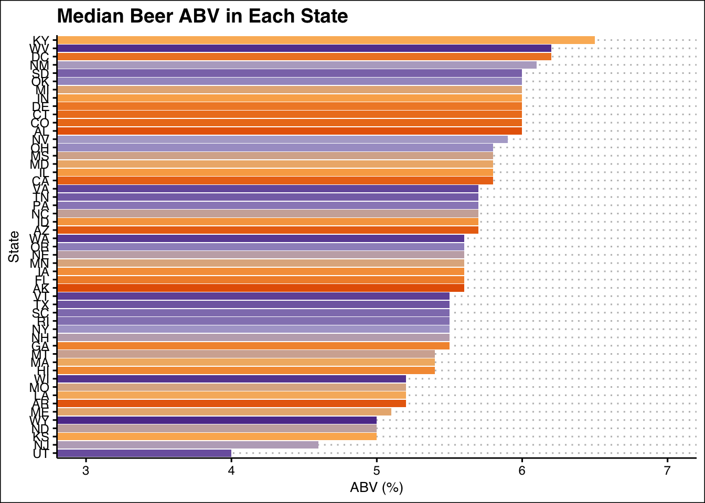
medians %>%
ggplot(aes(y = reorder(State, medianIBU), x = medianIBU, fill = State)) +
geom_bar(stat = "identity",fill=coul) +
theme_clean() +
theme(legend.position = "none") +
ylab("IBU") +
xlab("State") +
ggtitle("Median Beer IBU in Each State")+coord_cartesian(xlim=c(15,70))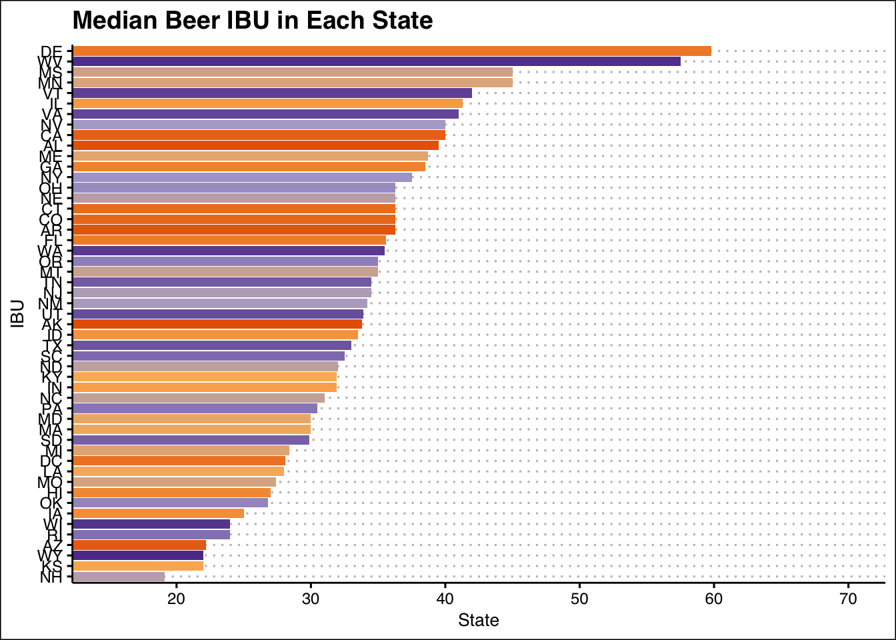
#Highest ABV
fullbeer[which.max(fullbeer$ABV),]## Name Beer_ID ABV IBU
## 2279 Lee Hill Series Vol. 5 - Belgian Style Quadrupel Ale 2565 0.128 24
## Brewery_id Style Ounces Brewery Name City State
## 2279 52 Quadrupel (Quad) 19.2 Upslope Brewing Company Boulder CO#Most Bitter - Highest IBU
fullbeer[which.max(fullbeer$IBU),]## Name Beer_ID ABV IBU Brewery_id
## 148 Bitter Bitch Imperial IPA 980 0.082 138 375
## Style Ounces Brewery Name City State
## 148 American Double / Imperial IPA 12 Astoria Brewing Company Astoria ORsummary(fullbeer$ABV)## Min. 1st Qu. Median Mean 3rd Qu. Max.
## 0.00100 0.05000 0.05647 0.05975 0.06700 0.12800fullbeer$ABV<-round(fullbeer$ABV*100,digits=1)
fullbeer %>%
ggplot(aes(x = ABV, fill = "red"))+
geom_histogram() +
theme_clean() +
theme(legend.position = "none") +
ylab("Beer Count") +
ggtitle("Histogram of Beer ABV")+
xlab("ABV (%)")## `stat_bin()` using `bins = 30`. Pick better value with `binwidth`.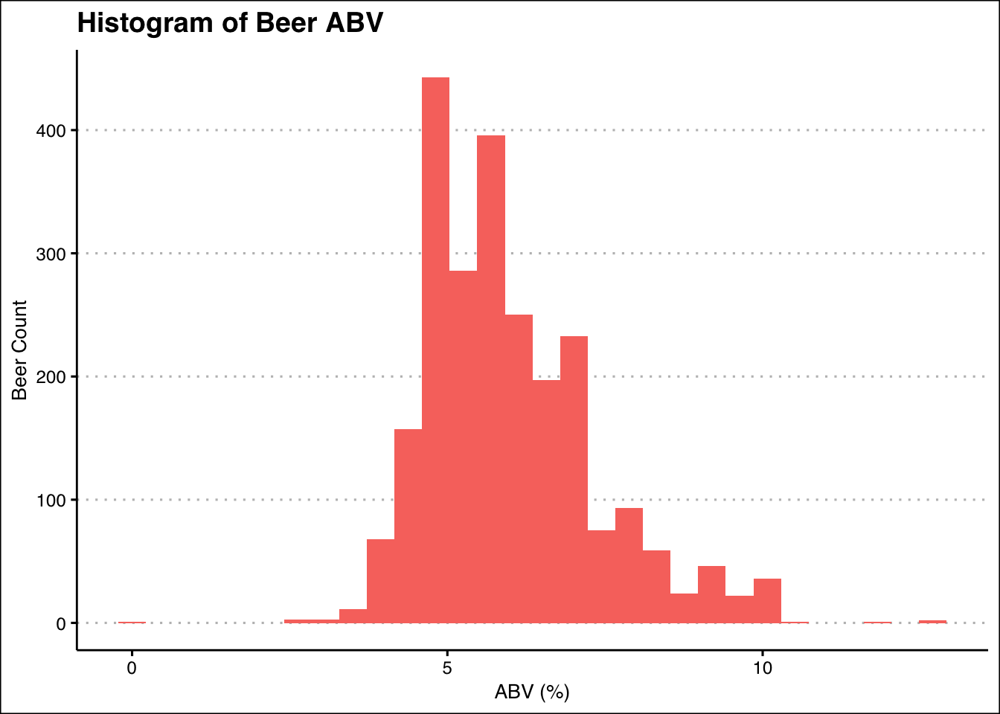
fullbeer %>%
ggplot(aes(x = ABV, color = "red")) +
geom_density() +
theme_clean() +
theme(legend.position = "none") +
ggtitle("Density plot of Beer ABV")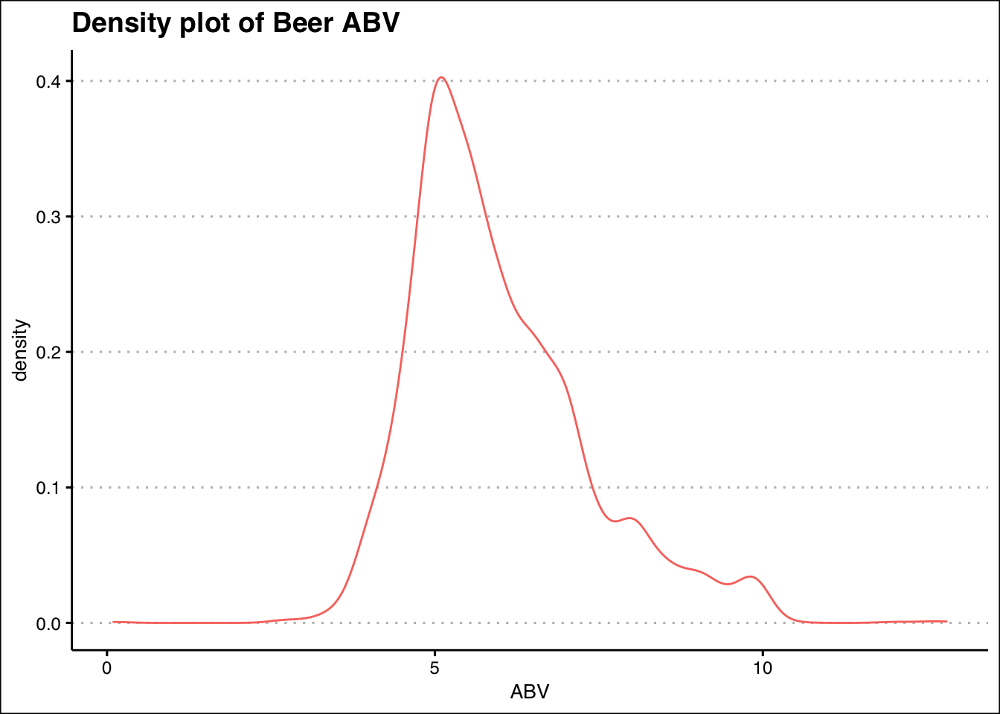
# Very right skewed distribution. Most beers are in the range of 0.04 - 0.06.library(ggpmisc)## Warning: package 'ggpmisc' was built under R version 4.0.2## Loading required package: ggpp## Warning: package 'ggpp' was built under R version 4.0.2##
## Attaching package: 'ggpp'## The following object is masked from 'package:ggplot2':
##
## annotatemy.formula = y ~ x
fullbeer %>%
ggplot(aes(x=ABV,y=IBU))+
geom_point(position = "jitter") +
geom_smooth(method="lm", color = "red") +
stat_poly_eq(formula = my.formula,
aes(label = paste(..eq.label.., ..rr.label.., sep = "~~~")),
parse = TRUE,
label.y = 0.87,
eq.x.rhs = "ABV",
eq.with.lhs = "IBU~`=`~") +
theme_clean() +
ggtitle("IBU vs ABV")## `geom_smooth()` using formula 'y ~ x'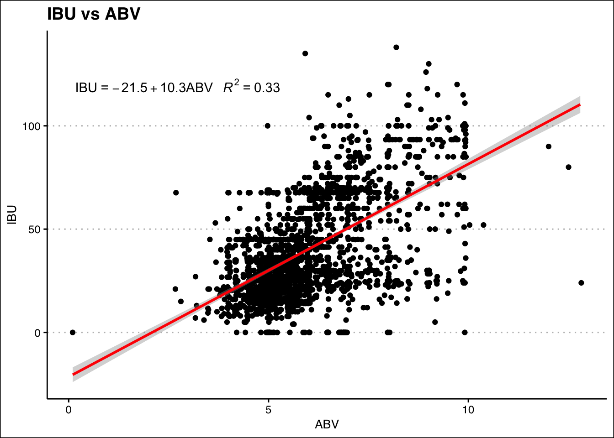
library(class)## Warning: package 'class' was built under R version 4.0.2library(caret)## Warning: package 'caret' was built under R version 4.0.2## Loading required package: lattice##
## Attaching package: 'caret'## The following object is masked from 'package:purrr':
##
## lift#First we pull all the beers that are IPA's or have Ale in the name
IPAsandAles<-fullbeer[grepl("IPA|Ale",fullbeer$Style),]
#Then we split the data into 2 groups: IPA's and Ales
IPAs <- IPAsandAles[grepl("IPA|India Pale Ale", IPAsandAles$Style),]
Ales <- IPAsandAles[!grepl("IPA|India Pale Ale", IPAsandAles$Style),]
#Create a new column to identify each beer as IPA or Ale and then re-combine datasets
IPAs$Class = "IPA"
Ales$Class = "Ale"
IPAsandAles <- rbind(IPAs, Ales)
#Create new data frame from IPAsandAles that only includes IBU, ABV, and Class information.
IPAAle <- data.frame(ABV = IPAsandAles$ABV,
IBU = IPAsandAles$IBU,
ZABV = scale(IPAsandAles$ABV),
ZIBU = scale(IPAsandAles$IBU),
Class = IPAsandAles$Class)
#We are first splitting our data into a training set and a validation set so we may assess in the end.
#Train 80% validate 20%
set.seed(1)
trainIndices = sample(1:dim(IPAAle)[1],round(.8* dim(IPAAle)[1]))
train = IPAAle[trainIndices,]
validate = IPAAle[-trainIndices,]
#To tune the hyperparameters, we did a for loop with cross validation and a for loop using our train set.
iterations = 1
numks = 30
masterAcc = matrix(nrow = iterations, ncol = numks)
masterSens = matrix(nrow = iterations, ncol = numks)
masterSpec = matrix(nrow = iterations, ncol = numks)
for(j in 1:iterations)
{
for(i in 1:numks)
{
classifications = knn.cv(train[,c(3,4)],train$Class, prob = TRUE, k = i)
CM = confusionMatrix(table(classifications,train$Class))
masterAcc[j,i] = CM$overall[1]
masterSens[j,i]=CM$byClass[1]
masterSpec[j,i]=CM$byClass[2]
}
}
MeanAcc = colMeans(masterAcc)
MeanSens=colMeans(masterSens)
MeanSpec = colMeans(masterSpec)
#Make plots to see the effect of K
par(mfrow=c(1,3))
CVAcc = data.frame(K = seq(1,numks,1), MeanAcc = MeanAcc)
CVAcc %>%
ggplot(aes(K, MeanAcc)) +
geom_point() +
geom_line() +
theme_clean() +
ylab("Accuracy")+
ggtitle("Effect of K on Accuracy (CV)")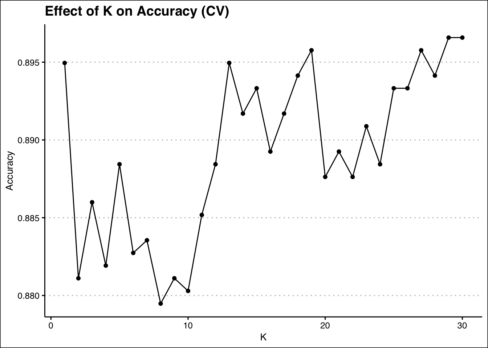
CVSens = data.frame(K = seq(1,numks,1), MeanSens = MeanSens)
CVSens %>%
ggplot(aes(K, MeanSens)) +
geom_point() +
geom_line() +
theme_clean() +
ylab("Sensitivity")+
ggtitle("Effect of K on Sensitivity (CV)")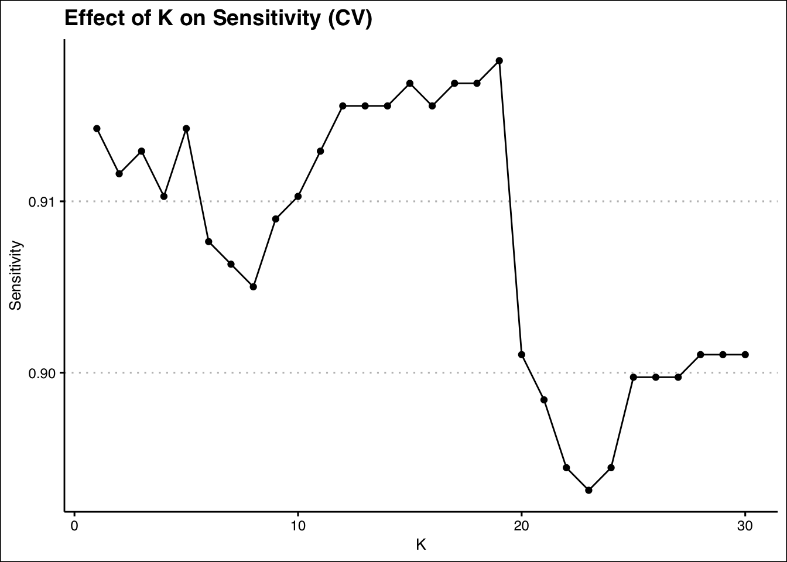
CVSpec = data.frame(K = seq(1,numks,1), MeanSpec = MeanSpec)
CVSpec %>%
ggplot(aes(K, MeanSpec)) +
geom_point() +
geom_line() +
theme_clean() +
ylab("Specificity")+
ggtitle("Effect of K on Specificity (CV)")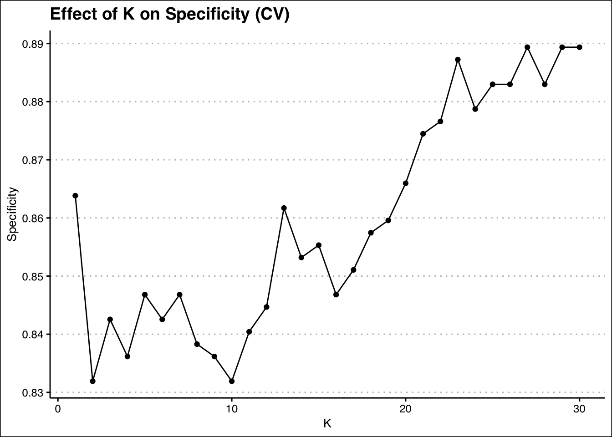
# This for loop creates 500 iterations of train/test splits (from the training data) to tune k using external cross validation
iterations = 500
numks = 30
masterAcc = matrix(nrow = iterations, ncol = numks)
masterSens = matrix(nrow = iterations, ncol = numks)
masterSpec = matrix(nrow = iterations, ncol = numks)
splitPerc=.75
for(j in 1:iterations)
{
trainIndices = sample(1:dim(train)[1],round(splitPerc * dim(train)[1]))
train1 = train[trainIndices,]
test1 = train[-trainIndices,]
for(i in 1:numks)
{
classifications = knn(train1[,c(3,4)],test1[,c(3,4)],train1$Class, prob = TRUE, k = i)
CM = confusionMatrix(table(classifications,test1$Class))
masterAcc[j,i] = CM$overall[1]
masterSens[j,i] = CM$byClass[1]
masterSpec[j,i] = CM$byClass[2]
}
}
MeanAcc = colMeans(masterAcc)
MeanSens = colMeans(masterSens)
MeanSpec = colMeans(masterSpec)
kAcc = data.frame(K = seq(1,numks,1), Accuracy = MeanAcc)
kAcc %>%
ggplot(aes(K, Accuracy)) +
geom_point() +
geom_line() +
theme_clean() +
ylab("Accuracy")+
ggtitle("Effect of K on Accuracy (Train/Test Split)")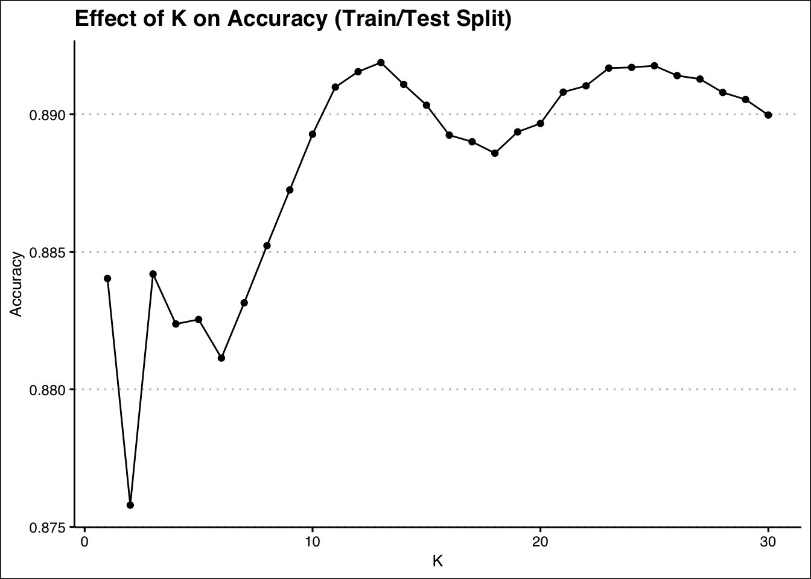
kSens = data.frame(K = seq(1,numks,1), Sensitivity = MeanSens)
kSens %>%
ggplot(aes(K, Sensitivity)) +
geom_point() +
geom_line() +
theme_clean() +
ylab("Sensitivity")+
ggtitle("Effect of K on Sensitivity (Train/Test Split)")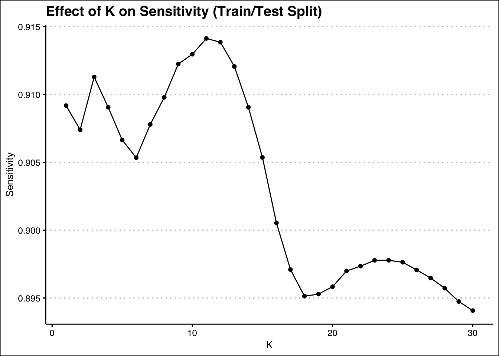
kSpec = data.frame(K = seq(1,numks,1), Specificity = MeanSpec)
kSpec %>%
ggplot(aes(K, MeanSpec)) +
geom_point() +
geom_line() +
theme_clean() +
ylab("Specificity")+
ggtitle("Effect of K on Specificity (Train/Test Split)")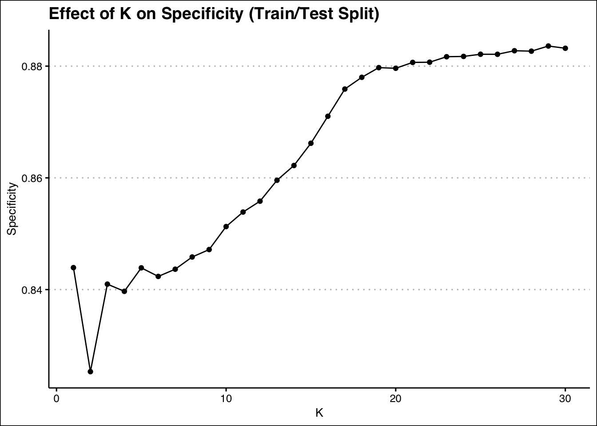
classifications = knn(train[,c(3,4)],validate[,c(3,4)],train$Class, prob = TRUE, k = 21)
CM = confusionMatrix(table(classifications,validate$Class))
confusionMatrix(table(classifications,validate$Class))## Confusion Matrix and Statistics
##
##
## classifications Ale IPA
## Ale 185 21
## IPA 21 80
##
## Accuracy : 0.8632
## 95% CI : (0.8196, 0.8996)
## No Information Rate : 0.671
## P-Value [Acc > NIR] : 1.015e-14
##
## Kappa : 0.6901
##
## Mcnemar's Test P-Value : 1
##
## Sensitivity : 0.8981
## Specificity : 0.7921
## Pos Pred Value : 0.8981
## Neg Pred Value : 0.7921
## Prevalence : 0.6710
## Detection Rate : 0.6026
## Detection Prevalence : 0.6710
## Balanced Accuracy : 0.8451
##
## 'Positive' Class : Ale
## ###Exploring a Naive Bayes model ##### We tried to use the Naive Bayes approach to see how it performed. We had our reservations because the Naive Bayes method assumes that the predicting variables have a normal distribution. As shown previously, both the ABV and IBU variables are skewed to the right. We tried it anyway, and found that the Naive-Bayes model seems to be robust to non-normality in this situation. This may be cool to explore later on.
##Naive Bayes Exploration
library(e1071)## Warning: package 'e1071' was built under R version 4.0.2model = naiveBayes(Class~ABV+IBU,data = train)
confusionMatrix(table(predict(model,validate[,c(1,2)]),as.factor(validate$Class)))## Confusion Matrix and Statistics
##
##
## Ale IPA
## Ale 186 20
## IPA 20 81
##
## Accuracy : 0.8697
## 95% CI : (0.8268, 0.9053)
## No Information Rate : 0.671
## P-Value [Acc > NIR] : 9.98e-16
##
## Kappa : 0.7049
##
## Mcnemar's Test P-Value : 1
##
## Sensitivity : 0.9029
## Specificity : 0.8020
## Pos Pred Value : 0.9029
## Neg Pred Value : 0.8020
## Prevalence : 0.6710
## Detection Rate : 0.6059
## Detection Prevalence : 0.6710
## Balanced Accuracy : 0.8524
##
## 'Positive' Class : Ale
## count_by_state<-fullbeer%>%group_by(State)%>%count(Style)
max_counts_by_State<-count_by_state%>%group_by(State)%>%summarize(n=max(n))
style_by_state<-left_join(max_counts_by_State,count_by_state,by=c("State","n"))
style_by_state$Style = as.factor(style_by_state$Style)
summary(style_by_state)## State n Style
## DC : 8 Min. : 1.000 American IPA :39
## SD : 7 1st Qu.: 1.000 American Pale Ale (APA) :19
## AR : 5 Median : 3.000 American Blonde Ale : 6
## IA : 5 Mean : 6.031 American Amber / Red Ale : 4
## CT : 3 3rd Qu.: 6.000 American Brown Ale : 3
## GA : 3 Max. :45.000 American Double / Imperial IPA: 3
## (Other):65 (Other) :22most_popular_styles =
style_by_state %>%
group_by(Style) %>%
summarise(n = n())
most_popular_styles %>%
ggplot(aes(x = reorder(Style, n), y = n, fill = Style)) +
geom_bar(stat = "identity") +
theme_clean() +
coord_flip() +
theme(legend.position = "none") +
ylab( "Frequency of Style") +
xlab("Style") +
ggtitle("Most Numerous Styles of Beers in All States")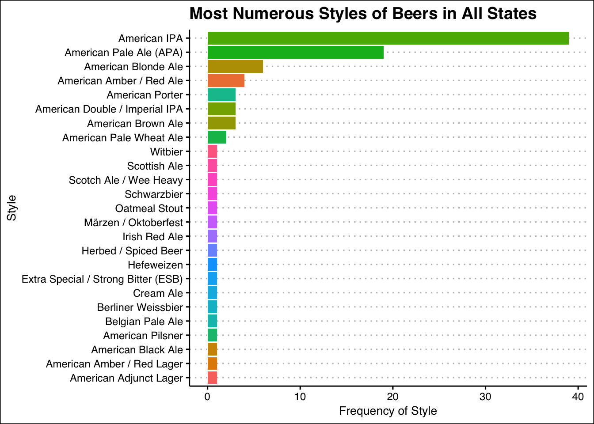
IPAState = count_by_state%>%group_by(State)%>%filter(Style == "American IPA")
IPAState %>%
ggplot(aes(x = reorder(State, n), y = n, fill = State)) +
geom_bar(stat = "identity") +
theme_clean() +
coord_flip() +
theme(legend.position = "none") +
ylab("Number of American IPA's") +
xlab("State") +
ggtitle("Number of Unique American IPA's in each state")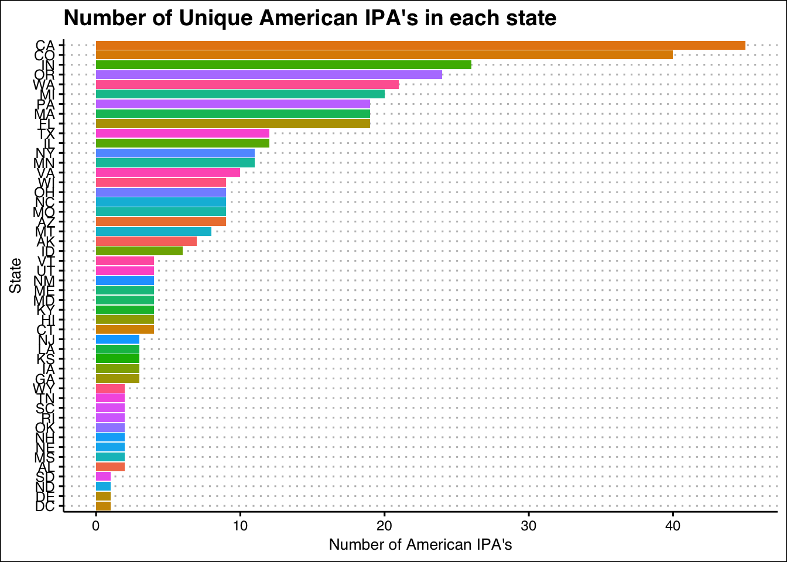
#We could make the conclusion that IPA's could be introduced into those markets that don't have many IPA's as that is the most popular class of beers in the states.
max_style_by_state = style_by_state %>% group_by(State) %>% summarize(n= max(n))
summary(as.factor(style_by_state$Style))## Abbey Single Ale Altbier
## 0 0
## American Adjunct Lager American Amber / Red Ale
## 1 4
## American Amber / Red Lager American Barleywine
## 1 0
## American Black Ale American Blonde Ale
## 1 6
## American Brown Ale American Dark Wheat Ale
## 3 0
## American Double / Imperial IPA American Double / Imperial Pilsner
## 3 0
## American Double / Imperial Stout American India Pale Lager
## 0 0
## American IPA American Malt Liquor
## 39 0
## American Pale Ale (APA) American Pale Lager
## 19 0
## American Pale Wheat Ale American Pilsner
## 2 1
## American Porter American Stout
## 3 0
## American Strong Ale American White IPA
## 0 0
## American Wild Ale Baltic Porter
## 0 0
## Belgian Dark Ale Belgian IPA
## 0 0
## Belgian Pale Ale Belgian Strong Dark Ale
## 1 0
## Belgian Strong Pale Ale Berliner Weissbier
## 0 1
## Bière de Garde Bock
## 0 0
## Braggot California Common / Steam Beer
## 0 0
## Chile Beer Cider
## 0 0
## Cream Ale Czech Pilsener
## 1 0
## Doppelbock Dortmunder / Export Lager
## 0 0
## Dubbel Dunkelweizen
## 0 0
## English Barleywine English Bitter
## 0 0
## English Brown Ale English Dark Mild Ale
## 0 0
## English India Pale Ale (IPA) English Pale Ale
## 0 0
## English Pale Mild Ale English Stout
## 0 0
## English Strong Ale Euro Dark Lager
## 0 0
## Euro Pale Lager Extra Special / Strong Bitter (ESB)
## 0 1
## Flanders Oud Bruin Flanders Red Ale
## 0 0
## Foreign / Export Stout Fruit / Vegetable Beer
## 0 0
## German Pilsener Gose
## 0 0
## Grisette Hefeweizen
## 0 1
## Herbed / Spiced Beer Irish Dry Stout
## 1 0
## Irish Red Ale Keller Bier / Zwickel Bier
## 1 0
## Kölsch Kristalweizen
## 0 0
## Light Lager Low Alcohol Beer
## 0 0
## Märzen / Oktoberfest Maibock / Helles Bock
## 0 0
## Märzen / Oktoberfest Mead
## 1 0
## Milk / Sweet Stout Munich Dunkel Lager
## 0 0
## Munich Helles Lager Oatmeal Stout
## 0 1
## Old Ale Other
## 0 0
## Pumpkin Ale Quadrupel (Quad)
## 0 0
## Radler Rauchbier
## 0 0
## Roggenbier Russian Imperial Stout
## 0 0
## Rye Beer Saison / Farmhouse Ale
## 0 0
## Schwarzbier Scotch Ale / Wee Heavy
## 1 1
## Scottish Ale Shandy
## 1 0
## Smoked Beer Tripel
## 0 0
## Vienna Lager Wheat Ale
## 0 0
## Winter Warmer Witbier
## 0 1